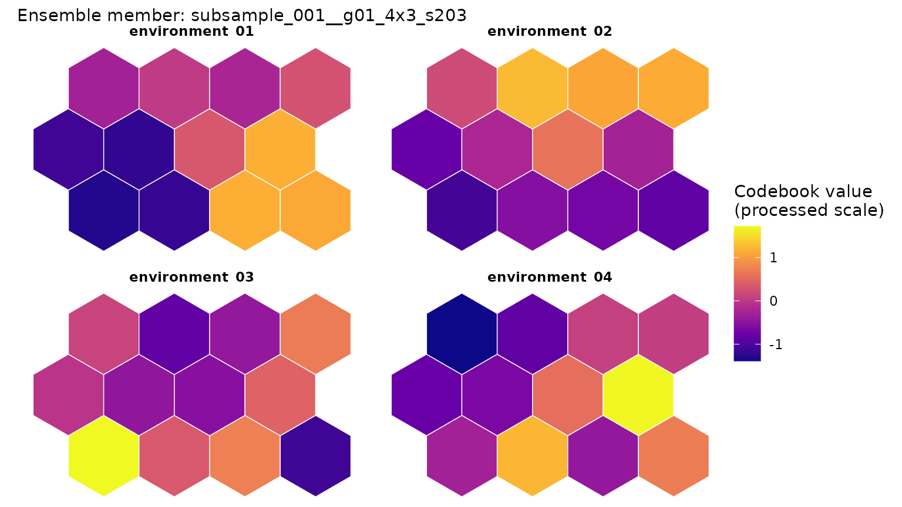
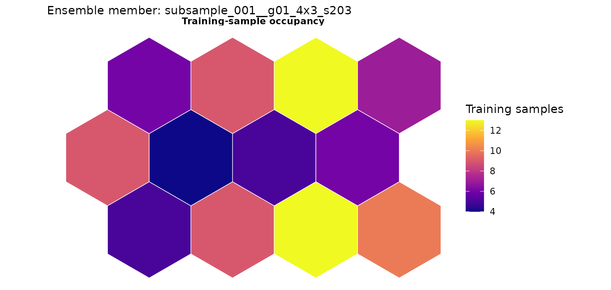
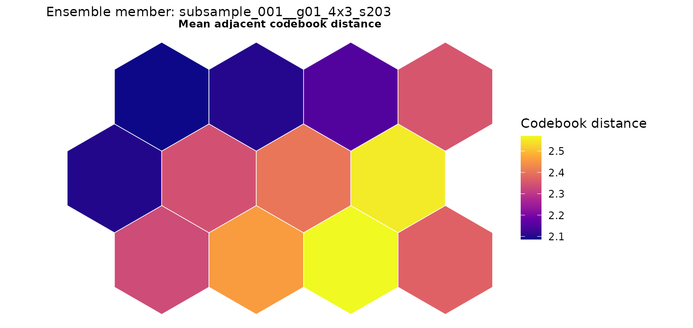
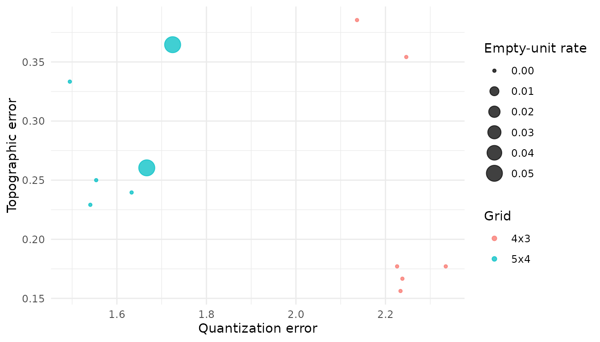
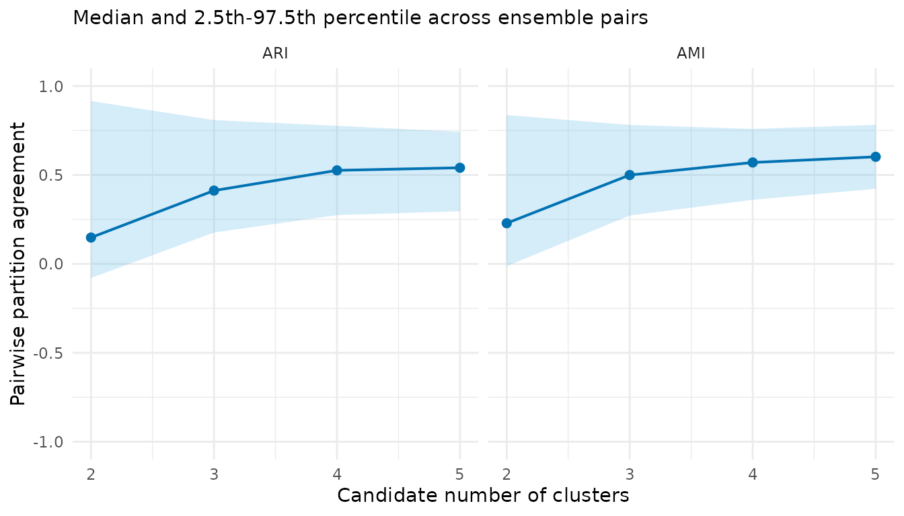
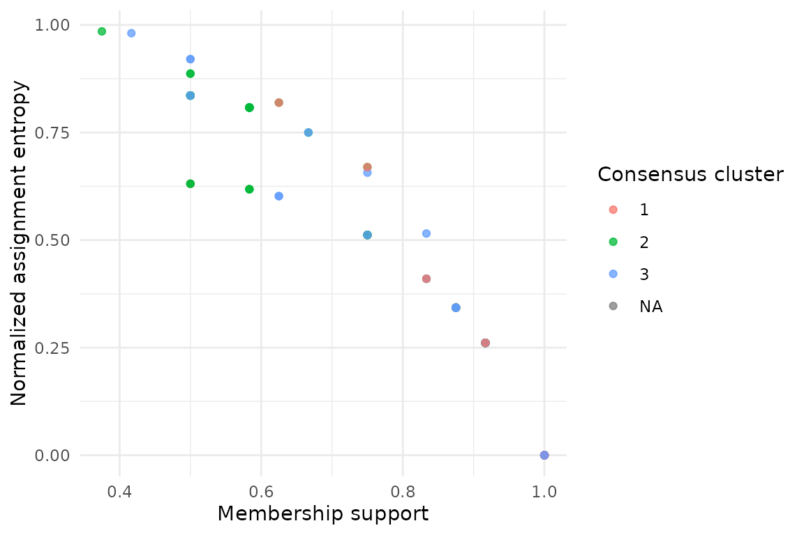
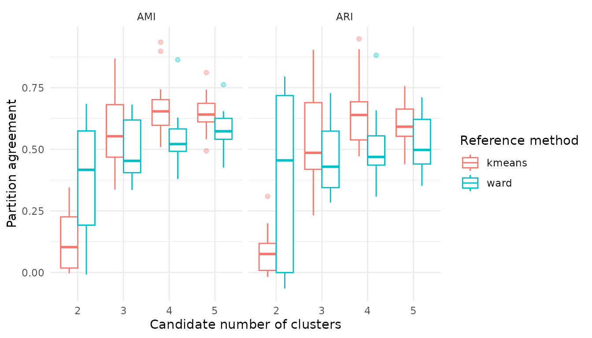

Read the maps and uncertainty plots
Shaowen Ye
Source:vignettes/v04-visualizing-evidence.Rmd
v04-visualizing-evidence.RmdFit a small example
A component plane shows one fitted map. It cannot show how much the result changes across resampled data, grid sizes and random starts. We therefore read the map together with the ensemble plots.
library(SOMevidence)
dat <- simulate_som_scenario(
"clusters",
n = 120,
p = 6,
seed = 201
)
resamples <- som_resamples(
dat,
method = "subsample",
repeats = 3,
seed = 202
)
spec <- som_spec(
grids = list(c(4, 3), c(5, 4)),
seeds = c(203, 204),
rlen = 50,
k = 2:5
)
workflow <- run_som_workflow(
dat,
spec,
resamples,
cross_models = c("kmeans", "ward")
)
fit_id <- workflow$ensemble$fits[[1]]$idLook at one map
plot_som_plane(
workflow$ensemble,
fit_id = fit_id,
variables = colnames(dat$layers$environment)[1:4]
)
The colours show codebook values after the preprocessing used for
this fit. The subtitle identifies the ensemble member. If more than one
map is available, fit_id is required so that the displayed
map is unambiguous.
Two companion views help explain the map:
plot_som_plane(
workflow$ensemble,
type = "occupancy",
fit_id = fit_id
)
plot_som_plane(
workflow$ensemble,
type = "neighbour_distance",
fit_id = fit_id
)
Occupancy shows how many observations use each map unit. Neighbour distance shows changes between adjacent codebook vectors. Neither view tells us whether a hard classification is stable.
Put ensemble evidence beside the map
plot(workflow$audit)
plot(workflow$partitions)
The first plot summarizes representation diagnostics and fit success. The second shows how candidate partitions vary across the ensemble. Read the displayed intervals and coverage rather than choosing a result from colour or visual separation alone.
Find uncertain samples
consensus_k3 <- workflow$consensus$k3
plot(consensus_k3)
#> Warning: Removed 3 rows containing missing values or values outside the scale range
#> (`geom_point()`).
consensus_k3$cluster_summary
#> cluster median_jaccard jaccard_q025 jaccard_q975
#> 1 1 0.8573589 0.4310345 0.9677419
#> 2 2 0.5827922 0.3043478 0.9166667
#> 3 3 0.6866071 0.3921569 0.8285714Membership support and assignment entropy show where the repeated
fits agree and where they do not. A consensus label is still conditional
on the chosen data, preprocessing, ensemble and k.
Compare reference methods
plot(workflow$cross_comparison)
This plot shows agreement with the prespecified reference methods. It does not rank the methods or turn agreement into accuracy.
For a report, keep at least three views together: one clearly identified map, the ensemble representation diagnostics and the partition or consensus evidence. This is more informative than a single attractive SOM figure.